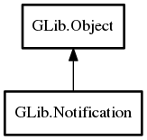

Notification
Object Hierarchy:
Description:
Notification is a mechanism for creating a notification to be shown to the user -- typically as a pop-up notification presented by the desktop environment shell.
The key difference between Notification and other similar APIs is that, if supported by the desktop environment, notifications sent with Notification will persist after the application has exited, and even across system reboots.
Since the user may click on a notification while the application is not running, applications using Notification should be able to be started as a D-Bus service, using Application.
User interaction with a notification (either the default action, or buttons) must be associated with actions on the application (ie: "app." actions). It is not possible to route user interaction through the notification itself, because the object will not exist if the application is autostarted as a result of a notification being clicked.
A notification can be sent with send_notification.
Namespace: GLib
Package: gio-2.0
Content:
Creation methods:
Methods:
Inherited Members:
All known members inherited from class GLib.Object